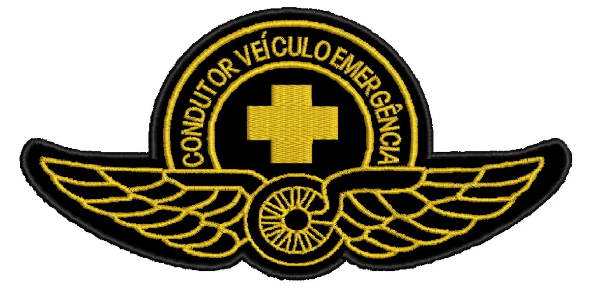

Formação e Certificados
Cursando Análise e desenvolvimento de Sistemas -UNINTER
2024

Condutor de Veiculos de Emergências -Detran
2024

Primeiros Socorros - 22Brasil
2023
Atendimento pré-Hospitalar - Stop the bleed
2024
Atendimento pré Hospitalar em combate - PMSP